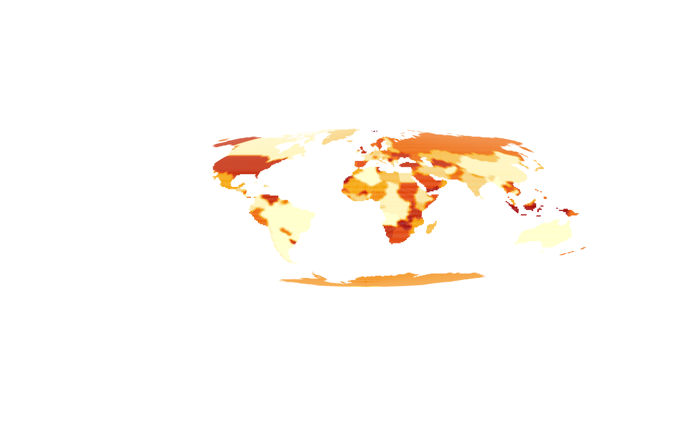

Convert to a quadmesh and plot in efficient vectorized form using 'grid'.
Plot mesh
mesh_plot( x, crs = NULL, col = NULL, add = FALSE, zlim = NULL, ..., coords = NULL ) # S3 method for BasicRaster mesh_plot( x, crs = NULL, col = NULL, add = FALSE, zlim = NULL, ..., coords = NULL ) # S3 method for RasterLayer mesh_plot( x, crs = NULL, col = NULL, add = FALSE, zlim = NULL, ..., coords = NULL ) # S3 method for stars mesh_plot( x, crs = NULL, col = NULL, add = FALSE, zlim = NULL, ..., coords = NULL ) # S3 method for TRI mesh_plot( x, crs = NULL, col = NULL, add = FALSE, zlim = NULL, ..., coords = NULL ) # S3 method for quadmesh mesh_plot( x, crs = NULL, col = NULL, add = FALSE, zlim = NULL, ..., coords = NULL ) # S3 method for mesh3d mesh_plot( x, crs = NULL, col = NULL, add = FALSE, zlim = NULL, ..., coords = NULL, prefer_quad = TRUE, breaks = NULL )
| x | object to convert to mesh and plot |
|---|---|
| crs | target map projection |
| col | colours to use, defaults to that used by |
| add | add to existing plot or start a new one |
| zlim | absolute range of data to use for colour scaling (if |
| ... | passed through to |
| coords | optional input raster of coordinates of each cell, see details |
| prefer_quad | set to |
| breaks | argument passed along to |
nothing, used for the side-effect of creating or adding to a plot
The mesh may be reprojected prior to plotting using the 'crs' argument to define the target map projection in 'PROJ string' format. (There is no "reproject" function for quadmesh, this is performed directly on the x-y coordinates of the 'quadmesh' output). The 'col' argument are mapped to the input pplied object data as in 'image', and applied relative to 'zlim' if su.
If coords is supplied, it is currently assumed to be a 2-layer RasterBrick with
longitude and latitude as the cell values. These are used to geographically locate
the resulting mesh, and will be transformed to the crs if that is supplied. This is
modelled on the approach to curvilinear grid data used in the angstroms package. There
the function angstroms::romsmap() and `angstroms::romscoords()`` are used to separate the complicated
grid geometry from the grid data itself. A small fudge is applied to extend the coordinates
by 1 cell to avoid losing any data due to the half cell outer margin (get in touch if this causes problems!).
If 'color' is present on the object it is used. This can be overridden by
using the 'col' argument, and controlled with 'zlim' and 'breaks' in the usual
graphics::image() way.
##mesh_plot(worldll) ## crop otherwise out of bounds from PROJ rr <- raster::crop(worldll, raster::extent(-179, 179, -89, 89)) mesh_plot(rr, crs = "+proj=laea +datum=WGS84")mesh_plot(worldll, crs = "+proj=moll +datum=WGS84")prj <- "+proj=lcc +datum=WGS84 +lon_0=147 +lat_0=-40 +lat_1=-55 +lat_2=-20" mesh_plot(etopo, crs = prj, add = FALSE, col = grey(seq(0, 1, length = 20)))mesh_plot(rr, crs = prj, add = TRUE)